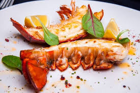

Recetas de Mariscos
Inicio
Langosta a la Parrilla
Deliciosa langosta cocinada a la parrilla con mantequilla y ajo. ¡Un plato espectacular!

Ingredientes
Langosta fresca
Mantequilla derretida
Ajo picado
Limón
Sal y pimienta
Instrucciones
Precalienta la parrilla a temperatura media-alta.
Abre las langostas y colócalas en la parrilla con la carne hacia abajo.
Pincela con mantequilla y ajo, y cocina hasta que estén doradas.
Sirve con limón y disfruta.
Inicio